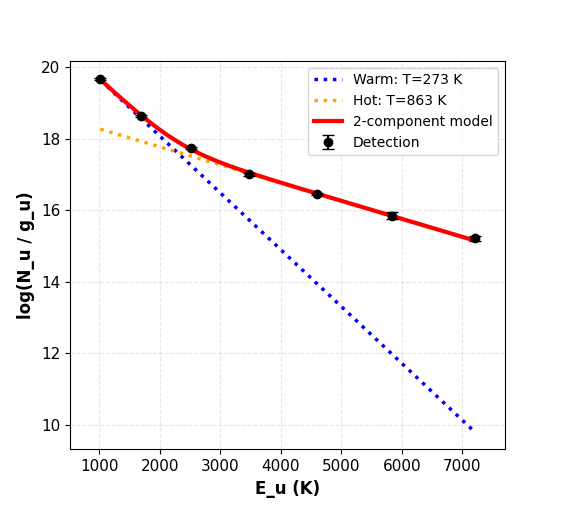
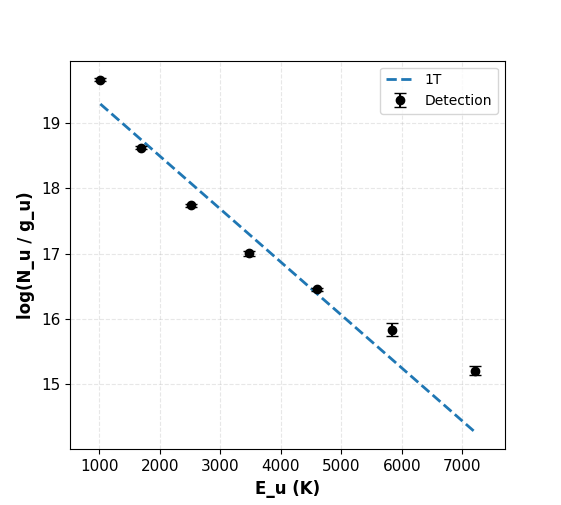
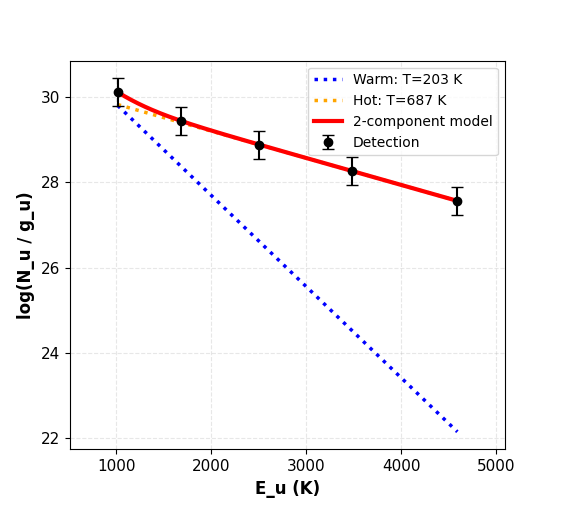

Rotational Diagram
Fit rotational excitation temperatures from a set of line fluxes (H2 or CO), using a single-temperature (1T) or two-temperature (2T) model, with an optional grid search over the ortho-to-para ratio (OPR) for H2.
Using the Rotational Diagram Tool
Accessing the Tool
Click the Rot Diag button in the main toolbar (Rotational Diagram group)
Step 1: Get Line Data
Two ways to populate the line table:
Fetch from HITRAN — set the wavelength range (μm), molecule (H2 or CO) and isotopologue, and either check All transitions or specify
v_upper/v_lower, then click Fetch from HITRAN. Populates the table with every matching line’s wavelength, A coefficient, Eupper and statistical weight — the flux columns are left blank for you to fill in.Import from CSV — load a file with
species,wavelengthandfluxcolumns (a column with “error” in its name is optional), e.g.data/H2_lines.csv. Each row is matched to the nearest HITRAN line by wavelength to fill in A/Eupper/gupper automatically, and its flux (and error, if present) populate the table directly.
A Calculate Fluxes button also appears once HITRAN lines are fetched, for measuring fluxes directly from the loaded cube instead of entering them by hand.
Step 2: Select Lines and Enter Flux Data
The table shows every fetched/imported line:
☑ — include this line in the fit
λ (μm), Transition, A_ul (s⁻¹), E_u (K), g_u — from HITRAN, not editable
Flux, Flux Error, Error % — enter a flux and either an absolute error or a percentage; the two error columns auto-calculate from each other as you type (toggle which one drives the calculation with the Error input dropdown above the table)
Upper Limit? — check this instead of entering an error for a non-detection
Important
Detections need a flux error — a detection with no error entered is silently dropped from the fit rather than assigned a made-up default (you’ll get a popup listing which lines were excluded, if any). Upper limits are the exception: they don’t need an error, just the checkbox.
If any line is marked as an upper limit, the fit automatically switches from ordinary least-squares to a Bayesian censored regression (PyMC) that treats upper limits as one-sided constraints rather than dropping or fudging them — this happens transparently, there’s no separate mode to select.
Step 3: Set Physical Parameters and Fit Options
R (AU) — emitting region radius. Check Unknown R to skip it entirely; Nu is then reported as a total molecule count rather than a column density (e.g. for comparing against PDRToolbox/PDRT).
Distance (pc)
Fit — 1T or 2T
Fit OPR — grid-search the ortho-to-para ratio to minimize χ² instead of assuming the fixed equilibrium value OPR = 3. Only affects H2 S-branch lines. Click ▶ Advanced to override the search grid (default: OPR from 0.1 to 3.0 in 400 steps).
Step 4: Run Fit → Results
Click Run Fit. The results window shows both text and a plot:
Detections — black points with error bars
Upper limits — red downward-pointing arrows (no error bar, since the constraint is one-sided)
1T mode: a single dashed line through the points
2T mode: dotted Warm/Hot lines for each component, plus a solid red 2-component model line for their sum
Y-axis is log10(Nu / gu), not natural log, despite the fit internally working in ln space
If Fit OPR was checked, the text results also report the best-fit OPR and its 1σ range.
Worked Examples
The dataset here is the standard H2 v=0→0 S(1)–S(7) pure-rotational line set (5.5–17 µm),
imported from data/H2_lines.csv.


2T fit (OPR fixed at 3) on all 7 lines — Warm (273 K) and Hot (863 K) components.


1T fit on the same 7 lines. The single line can’t track the curvature — the highest-Eu point sits well below it — which is exactly the signature that motivates using 2T here instead.


2T fit with Fit OPR enabled, on the 5 highest-Eu lines only and larger (75%) flux errors — a messier, more realistic case. The OPR search converged to 1.859.
Using the API
rotational_diagram() is not a separate wrapper — it’s the exact function the GUI calls,
imported directly. There’s no GUI/API divergence to account for here, unlike CO flux above.
from cube_explorer.api import rotational_diagram
# H2 v=0->0 S(1)-S(7), matching data/H2_lines.csv, matched against HITRAN
molecular_data = {
'wavelengths': {1: 17.034846, 2: 12.278612, 3: 9.664911, 4: 8.025041,
5: 6.909509, 6: 6.108564, 7: 5.511183},
'Aul': {1: 4.758e-10, 2: 2.753e-9, 3: 9.83e-9, 4: 2.641e-8,
5: 5.876e-8, 6: 1.141e-7, 7: 2.0e-7},
'Eu': {1: 1015.947, 2: 1683.068, 3: 2505.873, 4: 3477.452,
5: 4589.958, 6: 5834.798, 7: 7202.827},
'gu': {1: 7, 2: 9, 3: 11, 4: 13, 5: 15, 6: 17, 7: 19}, # bare 2*J_upper+1;
# apply_OPR() applies the ortho/para nuclear-spin weighting on top of this
}
result = rotational_diagram(
fluxes={1: 178e-16, 2: 55.9e-16, 3: 122e-16, 4: 28.4e-16,
5: 72.3e-16, 6: 14.4e-16, 7: 22.2e-16},
flux_errors={1: 9e-16, 2: 3.2e-16, 3: 6.3e-16, 4: 2.4e-16,
5: 4e-16, 6: 3.2e-16, 7: 3.8e-16},
molecular_data=molecular_data,
R=8.5, # AU
dist=71.5, # pc
fit2T=True,
)
print(f"1T Temperature: {result['1T']['T']:.1f} K")
print(f"2T Temperatures: {result['2T']['T1']:.1f} K, {result['2T']['T2']:.1f} K")
This reproduces the first worked example above exactly (273.4 K / 863.4 K).
Important
A 2T fit has 4 free parameters — you need meaningfully more than 4 lines for the fit
(and its uncertainties) to mean anything. Passing fit2T=True with too few points
doesn’t raise an error; it just silently returns a degenerate fit with huge, useless
uncertainties.
fluxes/flux_errors/molecular_data are all keyed by an arbitrary integer (the
GUI uses upper rotational level J, but any hashable key works, as long as it’s
consistent across the four dicts). Pass upper_limits={key: True} for non-detections
to switch on the same censored PyMC fit the GUI uses automatically — see the upper-limit
note in the GUI section above.
Tips
R=None(or omitting it) reports Nu as a total molecule count instead of a column density, matching the GUI’s Unknown R checkbox.Pass
fit_opr=True(and optionallyopr_grid=np.linspace(...)) to search for the best-fit OPR instead of fixing it at 3 — matching the third worked example above.